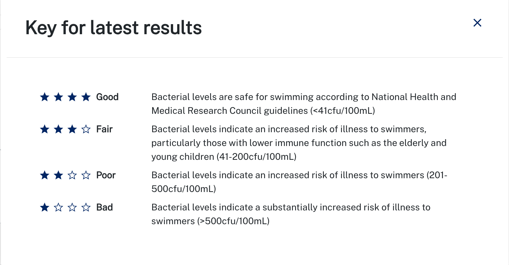
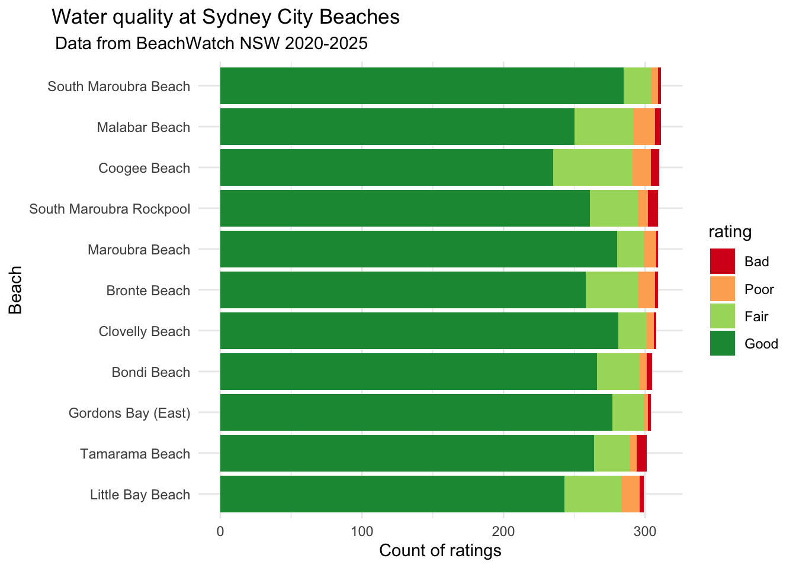
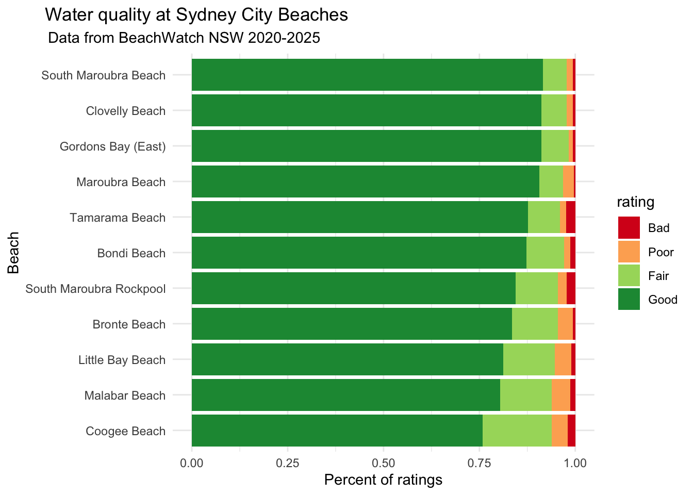
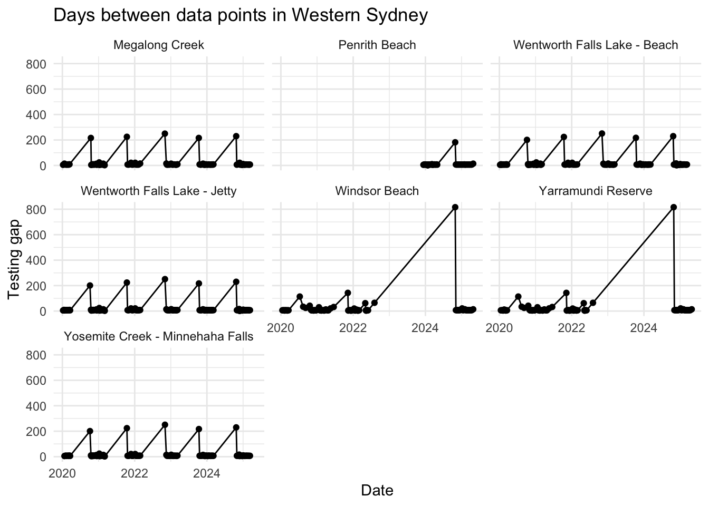

My first TidyTuesday data curation!! This is an updated version of the dataset we used for #RYouWithMe, a series of online modules designed to get beginners into #rstats. I am excited to dig in and learn something new about what is going on with poo at Sydney beaches.
In poking about the BeachWatch website, I noticed that they have a key that gives each beach a star rating according to the bacteria levels and the risk to swimmers.
I thought it might be interesting to look at different beach sites across the city and see how frequently each beach is rated as 4 stars “Good”.
I am most interested in data in the last 5 years so have filtered to only include reports from 2020 until 2025.

read the data
Here I am reading the data from TidyTuesday, filtering for date, renaming the enterococci variable to make it a bit easier to deal with and adding a new column that codes each bug level as either Good, Fair, Poor, or Bad, according to the BeachWatch key.
In the #RYouWithMe modules, we used data from the Sydney City beaches, so I am going to start with those because I am a bit more familiar with them.
raw count
Here I am filtering the water data to include only beaches that are within the Sydney city region and using the tabyl function from the janitor package to count how often each site was rated Good, Fair, Poor, and Bad. Then I make that data long and fix the order of the rating levels, before plotting.
Code
city <- water %>%filter(region =="Sydney City") good_days_city <- city %>%tabyl(swim_site, stars) %>%select(swim_site, Good, Fair, Poor, Bad) good_days_city_long <- good_days_city %>%pivot_longer(names_to ="rating", values_to ="count", Good:Bad) %>%mutate(rating =fct_relevel(rating, c("Bad", "Poor", "Fair", "Good"))) good_days_city_long %>%ggplot(aes(x =reorder(swim_site, count), y = count, fill = rating)) +geom_col() +scale_fill_manual(values = my_colours) +coord_flip() +labs(x ="Beach", y ="Count of ratings", title ="Water quality at Sydney City Beaches", subtitle="Data from BeachWatch NSW 2020-2025") +theme_minimal() +theme(plot.title =element_text(hjust =0.1), # Left align the titleplot.subtitle =element_text(hjust =0.1),plot.title.position ="plot"# Position at the "plot" level rather than "panel" )

percent
Across 2020-2025, there is a small amount of variability in the number of readings that each beach site has so I am going to tweak this to plot percent rather than raw data. I have also ordered the bars so that the beaches that have the highest percent Good ratings are at the top.
Code
good_days_city_long_percent <- good_days_city %>%pivot_longer(names_to ="rating", values_to ="count", Good:Bad) %>%mutate(rating =fct_relevel(rating, c("Bad", "Poor", "Fair", "Good"))) %>%group_by(swim_site) %>%mutate(total_days =sum(count)) %>%rowwise() %>%mutate(percent = count/total_days) %>%group_by(swim_site) %>%mutate(good_percent = percent[rating =="Good"]) %>%#pull good % for use in reorderungroup()good_days_city_long_percent %>%ggplot(aes(x =reorder(swim_site, good_percent), y = percent, fill = rating)) +geom_col() +scale_fill_manual(values = my_colours) +coord_flip() +labs(x ="Beach", y ="Percent of ratings", title ="Water quality at Sydney City Beaches", subtitle="Data from BeachWatch NSW 2020-2025") +theme_minimal() +theme(plot.title =element_text(hjust =0.1), # Left align the titleplot.subtitle =element_text(hjust =0.1),plot.title.position ="plot"# Position at the "plot" level rather than "panel" )

It is a bit disconcerting that Coogee beach (where I used to live) is only rated “Good” 75% of the time.
all regions
Now I would like to get a plot like this for all the other regions. It is interesting that there are so many data points for Northern Sydney and hardly any for Western Sydney, so that might be something to dig into too.
water %>%tabyl(region) %>%gt()
region
n
percent
Northern Sydney
6711
0.35386238
Southern Sydney
2456
0.12950171
Sydney City
3436
0.18117585
Sydney Harbour
5712
0.30118640
Western Sydney
650
0.03427366
I would like to count the number of times each swim site gets each star rating but keep information about which region the beach belongs too so I can compare regions.
If I use water %>% tabyl(swim_site, stars) the output drops information about the region.
But if I add region as an argument to the tabyl() function, the output ends up being a list.
good_days_region <- water %>%tabyl(swim_site, stars, region)class(good_days_region)
[1] "list"
Maybe I write a function that will apply the cleaning process and then make a plot for each region in the list.
My function takes two arguments: the data and names of the regions. It has a processing step which filters out sites that have missing data across the board, selects just relevant variables, makes the data long, and fixes the levels of the quality. The output of that step (processed_df) is fed into the plot.
Code
plot_region_data_raw <-function(df, region_name) { processed_df <- df %>%filter(Bad >0| Fair >0| Good >0| Poor >0) %>%select(swim_site, Good, Fair, Poor, Bad) %>%pivot_longer(names_to ="rating", values_to ="count", Good:Bad) %>%mutate(rating =fct_relevel(rating, c("Bad", "Poor", "Fair", "Good"))) plot <-ggplot(processed_df, aes(x =reorder(swim_site, count), y = count, fill = rating)) +geom_col() +scale_fill_manual(values = my_colours) +coord_flip() +labs(title =paste("Water Quality Ratings in", region_name),subtitle="Data from BeachWatch NSW 2020-2025",x ="Beach",y ="Count of ratings",fill ="Rating" ) +theme_minimal() +theme(axis.text.y =element_text(size =8),plot.title =element_text(hjust =0.1), # Left align the titleplot.subtitle =element_text(hjust =0.1),plot.title.position ="plot"# Position at the "plot" level rather than "panel" )return(plot)}
Once I have the function in my enviornment, I can use map2() from purrr to run the processing/plot function on each of the regions in the list and output a list of plots.
Code
region_plots_raw <-map2(good_days_region, # the list names(good_days_region), # the names of each list element plot_region_data_raw # function to map )
It is curious that Western Sydney has so many fewer data points than other regions, but it also makes it worth repeating the plots with percents.
Code
plot_region_data_percent <-function(df, region_name) { processed_df <- df %>%filter(Bad >0| Fair >0| Good >0| Poor >0) %>%select(swim_site, Good, Fair, Poor, Bad) %>%pivot_longer(names_to ="rating", values_to ="count", Good:Bad) %>%mutate(rating =fct_relevel(rating, c("Bad", "Poor", "Fair", "Good"))) %>%group_by(swim_site) %>%mutate(total_days =sum(count)) %>%rowwise() %>%mutate(percent = count/total_days) %>%group_by(swim_site) %>%mutate(good_percent = percent[rating =="Good"]) %>%#pull good % for use in reorderungroup() plot <-ggplot(processed_df, aes(x =reorder(swim_site, good_percent), y = percent, fill = rating)) +geom_col() +scale_fill_manual(values = my_colours) +coord_flip() +labs(title =paste("Water Quality Ratings in", region_name),subtitle="Data from BeachWatch NSW 2020-2025",x ="Beach",y ="Count of ratings",fill ="Rating" ) +theme_minimal() +theme(axis.text.y =element_text(size =8),plot.title =element_text(hjust =0.1), # Left align the titleplot.subtitle =element_text(hjust =0.1),plot.title.position ="plot"# Position at the "plot" level rather than "panel" )return(plot)}region_plots_percent <-map2(good_days_region, # list of data framesnames(good_days_region), # Names of each list element plot_region_data_percent # function to map )
The data presented above show that Western Sydney beaches have many fewer data points than beaches in other regions.
It got me thinking about potential differences in testing frequency. Here I am computing a new variable that calcuates the time between sucessive data points using the difftime() function.
It is clear that while the water quality in most regions is tested about once a week, in Western Sydney data points come in on average every 18 days. Is that because the frequency of testing is genuinely lower in Western Sydney, or are there gaps in the data?
This plot would suggest the latter is true.
#| code-fold: true#| ws <- freq %>%filter(region =="Western Sydney") ws %>%ggplot(aes(x = date, y= testing_gap)) +geom_point() +geom_line() +facet_wrap(~swim_site) +theme_minimal() +labs(title ="Days between data points in Western Sydney", x ="Date", y ="Testing gap")

In fact, if we look at the number of data points in the dataset per month, it is clear that in Western Sydney, at some beach sites, testing is seasonal and only happens in the summer.
Code
ws_monthly_count <- ws %>%mutate(month =month(date, label =TRUE)) %>%group_by(month, swim_site) %>%summarise(count =n()) ws_monthly_count %>%ggplot(aes(x = month, y = count)) +geom_point() +facet_wrap(~swim_site) +theme_minimal() +labs(title ="Water quality testing is seasonal in Western Sydney", x ="Month", y ="Count")